HarfBuzz 及其基础用法
UME 项目组内部教程 · A01（A） · 从字符到字形：缓冲区、整形、簇、特性，以及落到 Qt 的那一步
C++ HarfBuzz 排版引擎
T03 把字体文件拆开看过：cmap（character to glyph mapping，字符到字形的映射表）是码位到字形的字典、
GSUB（Glyph SUBstitution，字形替换）是替换规则、GPOS（Glyph POSitioning，字形定位）是间距规则。那一篇讲的是字体里有什么。
这一篇讲谁来读这些表。答案是这个库自己的一句话：
HarfBuzz is a text-shaping engine. If you give HarfBuzz a font and a string containing a sequence of Unicode codepoints, HarfBuzz selects and positions the corresponding glyphs from the font, applying all of the necessary layout rules and font features. HarfBuzz then returns the string to you in the form that is correctly arranged for the language and writing system.
——《HarfBuzz Manual》，What is HarfBuzz?
harfbuzz.github.io/what-is-harfbuzz.html
本篇按 「定义 → 输入 → 输出 → 中间那些表 → 操作 → 边界」 的顺序走， 术语第一次出现时给出手册原文定义与中文对照（第 2 节集中列一遍）。
手册原文一律用引用块给出，专业词汇保留英文；每处引用都标了章节与链接。
1text shaping：从字符码到字形序列
Text shaping is the process of translating a string of character codes (such as Unicode codepoints) into a properly arranged sequence of glyphs that can be rendered onto a screen or into final output form for inclusion in a document.
The shaping process is dependent on the input string, the active font, the script (or writing system) that the string is in, and …
——《HarfBuzz Manual》，What is HarfBuzz?
这句里藏着四个自变量，缺一个结果就变：
| 自变量 | 手册怎么说 | 在代码里是 |
|---|---|---|
| 输入串 | input string | hb_buffer_t 里的码位 |
| 字体 | the active font | hb_font_t |
| 文字系统 | the script (or writing system) | buf.script |
| 方向 | （同段后半）the direction | buf.direction |
它不是「把字画出来」，也不是「把字捏变形」。整形只回答一个问题：
这段文字，在这个字体里，该用哪几个字形、按什么顺序、各占多宽。
输出的是编号与坐标，不是像素 —— 这一点第 5 节展开。

2术语与定义
这一节集中列，后面各节不再重复解释。全部引自手册的 Terminology 一章。
script（文字系统）
In text shaping, a script is a writing system: a set of symbols, rules, and conventions that is used to represent a language or multiple languages.
——Terminology，script 条
手册还特意提醒与编程里的「脚本」区分，并且强调 script ≠ language：
蒙古文可以写蒙语、也可以写汉语借词；阿拉伯字母可以写阿拉伯语、波斯语、乌尔都语。
同一个 script，不同 language，字形选择可能不同（走 locl 特性）。
shaper（整形器）
In HarfBuzz, a shaper is a handler for a specific script-shaping model. HarfBuzz implements separate shapers for Indic, Arabic, Thai and Lao, Khmer, Myanmar, Tibetan, Hangul, Hebrew, the Universal Shaping Engine (USE), and a default shaper for scripts with no script-specific shaping model.
——Terminology，shaper 条
这条解释了为什么换个文字系统，行为会变：不是 HarfBuzz「聪明」， 而是它内部按 script 派给了不同的 shaper。Indic 那个 shaper 管的是天城文 （第 11 节），Arabic 那个管阿拉伯语（第 8 节），蒙古文走 USE（Universal Shaping Engine，通用整形引擎）/ 默认分支。
cluster（簇）与 grapheme（字素）
In text shaping, a cluster is a sequence of codepoints that must be treated as an indivisible unit. Clusters can include code-point sequences that form a ligature or base-and-mark sequences. Tracking and preserving clusters is important when shaping operations might separate or reorder code points.
——Terminology，cluster 条
In linguistics, a grapheme is one of the indivisible units that make up a writing system or script. … In practice, HarfBuzz and other text-shaping engines are not generally concerned with graphemes. However, it is important for developers using HarfBuzz to recognize that there is a difference between graphemes and shaping clusters. The two concepts may overlap frequently, but there is no guarantee that they will be identical.
——Terminology，grapheme 条（节选）
两者经常重合，但不保证相同。字素是文字学概念（你熟悉的那个）， 簇是整形引擎的记账单位。编辑器该按簇走，因为簇直接来自引擎； 而字素要靠 UAX（Unicode Annex，Unicode 标准附录）#29 自己算，算出来还可能和簇边界不一致。
其余几个（后文会用到）
| 术语 | 手册/规范里的意思 | 本篇怎么用 |
|---|---|---|
| glyph | 字体里的一个图形索引（glyph index）， 与 Unicode 码位不是一一对应 | 第 5 节：输出就是它 |
| advance | 排下一个字形前，笔要往前走多少 | 第 14 节：定点数 |
| offset | 字形相对基线的偏移，不推进笔 | 第 5 节 |
| run | 一组属性完全相同（同字体 / 同 script / 同方向 / 同语言） 的字符 | 第 4 节：HarfBuzz 一次只吃一个 run |
| feature | OpenType（Adobe 与 Microsoft 的字体格式）特性（liga、rclt 等），
是「跑哪几条规则」的开关 |
第 13 节 |
| quadrat | 古埃及学里指由若干圣书体符号拼成的一个方形区块 | 第 19 节 |
3HarfBuzz 不做什么
手册有一整章专门讲边界，而且写得毫不含糊：
HarfBuzz will take a Unicode string, shape it, and give you the information required to lay it out correctly on a single horizontal (or vertical) line using the font provided. That is the extent of HarfBuzz's responsibility.
——What HarfBuzz doesn't do
harfbuzz.github.io/what-harfbuzz-doesnt-do.html
原文列了三条「不做」，每一条都直接落在编辑器的设计上。
① 不做 bidi
HarfBuzz won't help you with bidirectionality. … if you want to lay out text that includes a mix of Hebrew and English, you will need to ensure that each buffer provided to HarfBuzz has all of its characters in the same order and that the directionality of the buffer is set correctly. This may mean segmenting the text before it is placed into HarfBuzz buffers. … Before sending your string to HarfBuzz, you may need to apply the bidi algorithm to it. Libraries such as ICU and fribidi can do this for you.
——What HarfBuzz doesn't do，bidi 段
手册还给了一个例子：敲进去的顺序是 A B C [空格] ג ב א [空格] D E F，
期望看到的是 ABC אבג DEF。这个重排叫 bidi processing，
属于 Unicode 标准的附录算法，不属于整形。
② 不做「一段里多种属性」
HarfBuzz won't help you with text that contains different font properties. … Similarly, if you change the font, font size, script, language, or direction within your string, then you will need to shape each run independently and output them independently. HarfBuzz expects to shape a run of characters that all share the same properties.
——What HarfBuzz doesn't do，混排段
③ 不做断行、断词、两端对齐
HarfBuzz won't help you with line breaking, hyphenation, or justification. … HarfBuzz lays out the string along a single line of, notionally, infinite length. … HarfBuzz can tell you how wide a shaped piece of text is, which is useful input to a justification algorithm, but it knows nothing about paragraphs, lines or line lengths.
——What HarfBuzz doesn't do，断行段
把手册的边界抄成一张待办单，编辑器的排版层至少有四件事是自己写的：
- 切 run：按 bidi 级别、字体、字号、script、语言切段
- 断行：UAX #14（蒙文「长词整体不可断」就栽在这里）
- 二维排版：竖排、圣书体的 quadrat（第 13、17 节）
- 栅格化：把字形号变成像素
4输入：缓冲区与 run
The input to the HarfBuzz shaper is a series of Unicode characters, stored in a buffer.
——Buffers, language, script and direction
文本在网络与内存里可以是 UTF-8 / UTF-16 / UTF-32 三种编码之一 ——
UTF-16（Unicode Transformation Format, 16-bit）是其中用 16 位单元（必要时用代理对）表示一个码位的那种，Windows 与 Qt 的 QString 用的就是它。
HarfBuzz 的装文本接口按编码分三个：add_utf8 / add_utf16 / add_utf32。

hb_buffer_t 是这批 API（Application Programming Interface，应用编程接口）里唯一可变的东西。它有两个阶段：
UNICODE 码位 + 每个码位的 cluster 号hb_shape()GLYPHS 字形号 + 位置这是原地转换：同一个缓冲区，整形前后长度可以不同（连字让它变短、
分解让它变长）。内部是两条平行数组（info[] 与 pos[]），
典型的 SoA 布局。
用编辑器的话说：这个 buffer 是一次排版事务的工作区。
| 函数 | 什么时候用 |
|---|---|
hb_buffer_create() | 线程启动时建一次 |
hb_buffer_clear_contents() |
每次整形前清空，保留已分配的内存 |
hb_buffer_destroy() | 线程结束时 |
忘了清空的表现：新文本接在旧文本后面一起整形 —— 「打一个字，屏幕上多出好几个字」，而且越打越多。单次测试永远复现不了。
5输出：字形号、位置、簇
HarfBuzz 交出的是字形编号 + 相对位置 + 回指输入的簇号。 没有像素，没有路径，没有颜色。
所以渲染方还得拿着这些编号回到同一个字体文件去取字模。 编号是字体内部的下标 —— 换一个字体文件，同一个编号就是另一个字。
| 字段 | 类型 | 含义 |
|---|---|---|
codepoint | 整数 | 字形号，不是 Unicode |
cluster | 整数 | 回指输入的第几个码位（第 8 节） |
x_advance / y_advance | 定点数 | 排下一个字形，笔要走多远 |
x_offset / y_offset | 定点数 | 字形相对基线偏多少（不推进笔） |
字形不是字符
手册在 cluster 条里说「整形操作可能分开或重排码位」。 反过来也成立：码位数量与字形数量可以不同。
| 关系 | 实例 | 说明 |
|---|---|---|
| 一对一 | 拉丁 a | 最常见 |
| 一对多 | 天城文的元音符号、阿拉伯的 harakat | 一个码位拆成基础字 + 标记 |
| 多对一 | 阿拉伯 لا（LAM+ALEF）、
天城文 क्ष、蒙文 GO |
几个码位合成一个字形（连字 / conjunct） |
| 一对变体 | 阿拉伯 BEH 的四形、蒙文 init/medi/fina/isol |
同一字符按环境取不同字形号 |
同一个词，不同字体给不同数量的字形
阿拉伯语 لا（LAM U+0644 +
ALEF U+0627）实测三支字体：
| 字体 | 码位 | 字形 | 结果 |
|---|---|---|---|
| Arial | 2 | 1 | uniFEFB |
| Times New Roman | 2 | 1 | uniFEFB |
| Segoe UI | 2 | 2 | glyph03941 + glyph03980 |
标准只要求「视觉上必须连成一个」，用几个字形是字体的设计自由。
HarfBuzz 通过 rlig 去问字体，字体给什么就用什么。
推论很硬：换字体不能只换字形表 —— 字形数量会变， 缓存的排版结果、光标位置、选区边界统统作废。
蒙文这边数字更夸张。整词 ᠮᠣᠩᠭᠣᠯ 有 6 个码位，整形出 5 个字形：
| 字形 | 推进量 | 说明 |
|---|---|---|
u182E.M.init | 492 | 词首 |
u1823.O.medi | 573 | 词中 |
u1829.AG.medi | 614 | 词中 |
u182D_u1823.GO.medi | 838 | GA + O 合成的连字 —— 两个码位一个字形 |
u182F.L.fina | 383 | 词尾 |
合计 2900，即 2.9000 em（UPEM，units per em，每 em 的设计单位数 = 1000），与
report/harfbuzz-ground-truth.txt 一致。
6三张核心表：cmap / GSUB / GPOS
HarfBuzz 不「懂」任何语言。它的工作是查三张表、跑两个状态机：
| 表 | 作用 | 读成一句话 | 例子 |
|---|---|---|---|
cmap | 查 | 这个码位的「名义字形」是几号 | U+0628 → uni0628 |
GSUB | 换 | 在某个上下文里，把 A 换成 B | beh → uniFE91（initial） |
GPOS | 挪 | 把 B 往左/右/上/下偏一点 | haraka 贴到基字上方 |
cmap是字典：键是码位，值是字形号。GSUB是上下文策略 + 多态替换表： 表里存「条件 → 替换」，引擎负责匹配。GPOS是约束求解的简化版：若干条相对位置规则叠加， 最后落到每个字形的x_offset / y_offset。
阿拉伯的四形走的就是 GSUB，四条特性按顺序跑：
ccmp → locl → isol → fina → finl → init → medi → rlig → calt → liga
↑预组合 ↑本地化 └──────── 四形，按连写状态挑 ────────┘
实测（Segoe UI，用 U+0640 tatweel 撑出位置）：
| 位置 | 字形 | 推进量 | 特性 |
|---|---|---|---|
| 单独 ب | uni0628 |
1881 | isol |
| 词首 بـ | uniFE91 |
684 | init |
| 词中 ـبـ | uniFE92 |
684 | medi |
| 词尾 ـب | uniFE90 |
1881 | fina |
这四个字形在字体里是现成的（名字就是 FE90/FE91/FE92），HarfBuzz 只负责挑。 蒙文不一样：字体里没有预置四种形态，86.1% 的字形要现场生成 —— 这就是为什么蒙文对引擎的依赖更重。
7一次完整的整形
#include <hb.h>
/* ① 字体：blob → face → font，三级引用，各管一件事 */
hb_blob_t* blob = hb_blob_create_from_file_or_fail("NotoSansMongolian-Regular.ttf");
hb_face_t* face = hb_face_create(blob, 0); /* 0 = 第一个字体（ttc 才有多个） */
hb_font_t* font = hb_font_create(face);
/* ② 缩放：不设这一行，后面所有推进量都是 em 单位（差 UPEM 倍） */
hb_font_set_scale(font, px * 64, px * 64);
hb_font_set_ppem (font, px, px);
/* ③ 装文本：QString 内部就是 UTF-16，直接给它 */
hb_buffer_t* buf = hb_buffer_create();
hb_buffer_add_utf16(buf, reinterpret_cast<const uint16_t*>(text.utf16()),
text.size(), 0, text.size());
/* ④ 猜属性：script / direction / language 一次到位 */
hb_buffer_guess_segment_properties(buf);
/* ⑤ 整形 —— 真正干活的一行 */
hb_shape(font, buf, nullptr, 0);
/* ⑥ 取结果：两条平行数组 */
unsigned n = hb_buffer_get_length(buf);
hb_glyph_info_t* info = hb_buffer_get_glyph_infos(buf, nullptr);
hb_glyph_position_t* pos = hb_buffer_get_glyph_positions(buf, nullptr);
/* ⑦ 用完要还 */
hb_buffer_destroy(buf);
- 忘设
scale：推进量是 em 单位，排出来小了一千倍。 - 用
ttb排蒙文：见第 15 节，实测每个字形都是 −1750。 - 手写
feature列表：等于覆盖掉默认集，连写全丢（第 13 节）。
★8cluster：编辑的最小单位
手册在 Clusters 一章开头给的 定义，比术语表更直白：
In text shaping, a cluster is a sequence of characters that needs to be treated as a single, indivisible unit. A single letter or symbol can be a cluster of its own. Other clusters correspond to longer subsequences of the input code points — such as a ligature or conjunct form — and require the shaper to ensure that the cluster is not broken during the shaping process.
——Clusters，Clusters and shaping
「indivisible unit」这三个词就是全部要点。如果整形会重排或合并码位， 就必须有一个东西记着「它们原来是一伙的」 —— 那就是 cluster 号。
实测一：蒙文的 FVS（Free Variation Selector，自由变体选择符）与 ZWJ（Zero Width Joiner，零宽连接符）都不占自己的簇
| 输入 | 码位 | 字形 | 簇 : 推进量 |
|---|---|---|---|
| 蒙文 ᠮ | 1 | 1 | c0:632 |
同上 + FVS1（U+180B） | 2 | 2 | c0:632 c0:770 |
同上 + ZWJ（U+200D） | 2 | 2 | c0:492 c0:0 |
| 同上 + FVS1 + ZWJ | 3 | 3 | c0:492 c0:770 c0:0 |
- FVS / ZWJ 全部并进
c0—— 光标与退格必须按簇走， 按字符删会把一个字形拆成两半。 - ZWJ 的推进是 0，但它把字形从 632 变成了 492（强制词首形）——
网页版
globpreview就是用这个逼出四种形态的。 - FVS1 把 632 变成 770 —— FVS 不是「删掉」，是「换一个更宽的字形」。
实测二：阿拉伯的 haraka 并进基字
| 输入 | 码位 | 字形 | 说明 |
|---|---|---|---|
| با（beh + alef） | 2 | 2 | beh 取 initial、alef 取 final |
| بَا（beh + fatha + alef） | 3 | 3 | fatha 推进 0，簇并进 beh |
加了 fatha 之后 beh 仍是 initial 形、alef 仍是 final 形 —— 透明字符不打断连写。用你熟悉的说法：这是「加一个不改变音位的成分」 在排版层的版本。
实测三：天城文整段并成一个簇
见第 11 节 —— 那里的 क्षि 四个码位并成一个簇， 是最极端的一例。
- 退格：删一簇，不是删一个码位
- 方向键：跳一簇
- 选区：边界永远落在簇边界上
- 复制：复制簇对应的原始码位区间，不是字形
违反任何一条，用户看到的就是「删了一个字母，屏幕上少了半个字」。
9FVS：自由变体选择符
第 5 节说过，同一个字符可以按环境取不同字形（一对变体）。 阿拉伯语靠四形特性解决，蒙文除了那四条，还有一套更细的机制：变体选择符。
它是什么
FVS（Free Variation Selector，自由变体选择符）是 Unicode 蒙文区段里的 四个格式字符：
| 码位 | 名字 | 类属 | 作用 |
|---|---|---|---|
| U+180B | FVS1 | 格式字符 | 跟在基字后面，指定用该字的第 N 个变体字形。 它不是一个可视字符，正常情况下不占推进量。 |
| U+180C | FVS2 | 格式字符 | |
| U+180D | FVS3 | 格式字符 | |
| U+180F | FVS4 | 格式字符 |
U+180B–U+180D 与 U+180F 是变体选择符；U+180E 是 MVS（Mongolian Vowel Separator，蒙古文元音分隔符）， 用途完全不同（分隔词内的元音，不做选形）。序号跳过 E 就是这个原因。
为什么蒙文需要它
蒙文有一批字母，同一个字在不同词里写法不同，但不是由前后字母决定的 ——
而是由词的来源（蒙古语固有词 / 汉语借词 / 藏语借词）或书写习惯决定。
这类区别没法用上下文规则（rclt）表达，只能由录入者显式指定。
FVS 就是那个「显式指定」的入口。
这不是可选功能。少了它，用户就没有办法表达那批字的第二种写法 ——
而不同写法是不同的词（见 FONT_ANALYSIS.md §147 的编辑器提示）。
同时它和基字必须同簇（第 8 节的实测）：光标不能停在两者之间， 退格一次要连基字一起删。
实测：它到底做了什么
MA 单独 字形 1 个 c0:632 MA + FVS1 字形 2 个 c0:632 c0:770
两件事值得注意：
- 簇没变：两个字形都记在
c0—— FVS 被并进了基字的簇。 - 但也没换形：第一个字形的编号与推进量（632）与单独写 MA 时完全一样； 第二个字形（770）是 FVS 自己占了一个位置。
变体选择符能否生效，取决于字体是否为这个组合提供了变体：
GSUB 里有 ccmp 规则把「基字 + FVS」替换成变体字形，它才生效；
没有规则，基字就原样不动。本字体对 MA + FVS1 没有提供变体，
于是 FVS 落到自己身上。
所以判断 FVS 有没有起作用，不能靠「看不看得见」 —— 要看字形数与字形号。 这也解释了为什么有些字体里 FVS 会显示成方框占位符。
编辑器的三条硬要求
| 要求 | 理由 |
|---|---|
| 能插入 | 那是表达第二种写法的唯一手段，不是装饰 |
| 能看见 | 格式字符不显示，用户不知道自己插了没有 —— 编辑器要给出可见提示（下划点、背景色或状态栏） |
| 连着基字 | 同簇；退格、方向键、选区都按簇走 |
10ZWJ：零宽连接符
FVS 解决「同字不同形」，ZWJ（Zero Width Joiner，零宽连接符，U+200D） 解决另一件事：让引擎以为旁边有人。
它是什么
ZWJ 是一个零宽、可连接的格式字符（U+200D）。 「零宽」是不占推进量，「可连接」是它会参与连写判断。 它的对偶是 ZWNJ（Zero Width Non-Joiner，零宽不连符，U+200C）—— 同样零宽，但作用是切断连写。
| 字符 | 码位 | 推进量 | 作用 |
|---|---|---|---|
| ZWJ | U+200D | 0 | 让两边连起来（或强制取某个位置形） |
| ZWNJ | U+200C | 0 | 让两边不连（打断连写） |
蒙文为什么用它
蒙文的字形选择依赖邻居：右边有人取词首形、左边有人取词尾形、两边都有人取词中形、 两边都没有取孤立形。于是只要在某个字母的一侧塞一个 ZWJ，就能骗出想要的位置形 —— 哪怕那个位置本来不存在。
MA 单独 字形 1 个 c0:632 ← 孤立形
MA + ZWJ 字形 2 个 c0:492 / c0:0
↑ 基字换成了 492（词首形），ZWJ 自己是 0
基字从 632 变成 492 —— 形状变了；ZWJ 自己的推进量是 0 —— 宽度没变。 这两个数字合起来就是「强制位置形，但不占位」。
web/globpreview.html 的「位置形态」一节就是用这个原理做的：
在字母前后加 ZWJ / ZWNJ，把四种形态逐格逼出来，好看清字体到底提供了哪些。
那张表里每一格的码位下面都标了 200D 或 200C 的位置，
就是为了说明「这一格是靠什么逼出来的」。

四种常见用法
| 写法 | 效果 |
|---|---|
| 字母 + ZWJ | 逼成词首形（右边装作有人） |
| ZWJ + 字母 | 逼成词尾形（左边装作有人） |
| ZWJ + 字母 + ZWJ | 逼成词中形（两边都装作有人） |
| 字母 + ZWNJ | 切断连写，保持孤立形 |
ZWJ 不占宽度、不换行、不可见，与空格完全不同。 别把它当分隔符用 —— 想分开两个词就老老实实写 U+0020。
另外它同样并进前一簇：与 FVS 一样，退格要连基字一起删， 否则会剩下一个没有基字的孤儿 ZWJ。
与 FVS 的分工
| FVS | ZWJ | ZWNJ | |
|---|---|---|---|
| 改的是 | 同一个字的变体 | 连写状态（装作有邻居） | 连写状态（切断） |
| 依赖 | 字体是否为该组合提供变体 | 引擎的连写判断 | 同左 |
| 实测推进量 | 应为 0（本字体是 770） | 0 | 0 |
| 典型用途 | 同字异写（固有词 / 借词） | 强制取某个位置形 | 故意不连 |
11天城文：连字、半形与视觉重排
这一节用的字体是随项目分发的 Shobhika（IIT Bombay，OFL 1.1）。 天城文走的是 Indic shaper（第 2 节那张表里的第一个）， 它的行为与阿拉伯、蒙文都不同 —— 值得单独看。
三个码位变一个字形
| 输入 | 码位 | 字形 | 推进量 | 说明 |
|---|---|---|---|---|
| क（ka） | 1 | 1 | 841 | 整字 |
| क्（ka + virama） | 2 | 1 | 841 | 半形：virama 不单独成形，把 ka 压成半个 |
| क्ष（ka + virama + ssa） | 3 | 1 | 830 | conjunct（连字）：三个码位一个字形 |
注意 क् 那行：码位 2 个、字形 1 个。
virama（U+094D）自己不占字形，它的作用是「让下一个字变成半形」。
这与蒙文的 FVS 有点像，但机制不同 —— FVS 是选变体，virama 是触发组合。
视觉重排：码位在后，字形在前
这是天城文最有教学价值的一点。i 元音符号 ि
（U+093F）在逻辑上跟在辅音后面，但视觉上画在辅音左边：
输入码位： U+0915 U+093F ← ka 在前，i 在后
c0 c0
整形输出： g2297 g713 ← i 的字形排到了前面！
adv=289 adv=841
c0 c0 ← 但两者是同一个簇
实测数字：
| 输入 | 码位 | 字形 | 字形序列与簇号 |
|---|---|---|---|
| क | 1 | 1 | g713/841/ c0 |
| कि（ka + i） | 2 | 2 | g2297/289/c0（i 在前） → g713/841/c0 |
| िक（i + ka） | 2 | 3 | g752/289/c0 → g1100/733/c0 → g713/841/c1 |
对比第 2、3 行：同样的两个码位，换个顺序，字形数和簇划分都变了。 第 2 行里 i 被当作前缀符号处理（并进 c0）；第 3 行里 ka 反而成了第二个簇。
四个码位、两个字形、一个簇
| 输入 | 码位 | 字形 | 字形序列与簇号 |
|---|---|---|---|
| क्षि（ka+virama+ssa+i） | 4 | 2 | g2304/289/c0 → g821/830/c0 |
四个码位（辅音 + virama + 辅音 + 元音符号）→ 两个字形 → 一个簇。
编辑器在这里：光标不能停在中间，退格一次要删掉全部四个码位， 否则会剩下一个无法成形的残串（比如只删掉 i，就变成 क्ष，字变了，而用户以为自己只删了个元音符号）。
真实词汇里也一样
| 词 | 码位 | 字形 | 簇号分布 |
|---|---|---|---|
| नमस्ते（namaste） | 6 | 4 | c0 c1 c2 c2 |
| हिन्दी（hindi） | 6 | 4 | c0 c0 c2 c2 —— 首两个字形同簇 |
हिन्दी 那行值得停一下：c0 c0 说明
हि 的 i 符号虽然画在前面，却和 ह
算同一个簇；而 न्दी 一段里 n 与 d 因为 virama 合成半形，
也并成 c2。
| 现象 | 阿拉伯 | 蒙文 | 天城文 |
|---|---|---|---|
| 选形由谁驱动 | 四形特性 init/medi/fina/isol |
rclt 上下文规则 | Indic shaper + 半形 / conjunct |
| 是否重排 | 否（只反向） | 否 | 是（i 符号前置） |
| 簇的跨度 | 基字 + harakat | 基字 + FVS/MVS | 整个音节（可达 4+ 码位） |
12方向与脚本
缓冲区身上有三个属性，整形前必须正确（第 3 节引过手册：属性不同就得切成不同 run）：
| 属性 | 取值 | 作用 |
|---|---|---|
script | Mong / Arab / Deva |
决定派给哪个 shaper（第 2 节） |
direction | ltr（left-to-right，从左到右）/
rtl（right-to-left，从右到左）/
ttb（top-to-bottom，从上到下） |
决定连写朝哪边接，也决定输出顺序 |
language | 如 mn |
影响 locl，多数场景可不设 |
猜的属性够不够用？实测：够
guess → Mong / ltr 字形 5 个 总推进 2900 显式 mong → Mong / ltr 字形 5 个 总推进 2900
完全一致。所以 不必手动设 script ——
除非一段里混了多种文字，那要自己切段（第 3 节①）。
方向传错，不只是左右颠倒
阿拉伯词 مكتبة（5 个码位）两个方向各排一次：
rtl → uniFE94/c4 uniFE92/c3 uniFE98/c2 uniFEDC/c1 uniFEE3/c0 ltr → uniFEE2/c0 uniFEDC/c1 uniFE98/c2 uniFE91/c3 uni0629/c4
rtl：簇号 4 → 0（倒序），第一个字形是最左边的 —— 已经被排成视觉顺序，客户端从左往右画即可。ltr：簇号 0 → 4，而且字形换了一整批 （uniFEE3↔uniFEE2，final ↔ initial）。
13OpenType 特性
手册把整形拆成「查表 + 换形 + 定距」。而实际操作时，引擎只做一件事：
按 script 与 language 选出一组特性，逐条执行。
hb_shape 的第三个参数就是用来覆盖这组特性的。
特性不是抽象概念 —— 它写在字体的 GSUB 里，按 script 分组。
这支蒙文字体实测声明了下面这些。本节前半的清单与定义搬自
T03 · 字体文件结构大揭秘 第 4 节：
那一篇拆的是字体内部结构（lookup 怎么分布），本篇管的是谁来执行。
script mong → aalt, ccmp, fina, init, isol, medi, ordn, rclt, vert script DFLT → 同上 script latn → aalt, ccmp, ordn ← 拉丁字母只做基础处理 script cyrl → aalt, ccmp, ordn script grek → aalt, ccmp, ordn
注意 latn / cyrl / grek 只做
aalt, ccmp, ordn —— 同一支字体，换个 script，跑的特性集换了一整套。
这正是第 2 节「script 决定派给哪个 shaper」的具体体现。
常用的八条
| 特性 | 作用 |
|---|---|
| isol | 孤立形：字母两边都不连 |
| init | 词首形：右边连接后面的字母 |
| medi | 词中形：两边都连 |
| fina | 词尾形：左边承接前面的字母 |
| ccmp | 字形组合 / 分解（预处理的替换） |
| rclt | 必需连字：不做会读错，必须执行 |
| vert | 竖排替换（25 个字形带这个后缀） |
| aalt | 全部替代字形（给用户挑选用） |
OpenType 里连字特性分两种：liga（可选，关了也能读）
和 rclt（必需，关了就读错）。
蒙文的音节连写属于后者 —— 同一串字母，
连与不连是不同的词。所以它写在 rclt 里。
这也解释了我们代码里那条禁令：绝对不能写
font-feature-settings 去手动打开 init/medi/fina/isol。
那会覆盖掉引擎本来会做的上下文判断，把连写拆散。
默认集已经够用
HarfBuzz 对 script=mong 默认就启用了
isol / init / medi / fina / rclt / ccmp。
手写一串看起来是「确保开启」，实际会覆盖掉默认集。
本项目实测过（report/harfbuzz-features-compare.txt）：
手写之后连写反而变差。正确做法是什么都不写。
什么时候才需要传？做对照实验的时候：
hb_feature_t f;
hb_feature_from_string("-rclt", -1, &f); /* 减号 = 关闭 */
hb_shape(font, buf, &f, 1);
这条的价值在于证明某个特性确实在起作用：关掉 rclt 之后，
蒙文退回孤立字形 —— 一眼看出差别。
常见写法：+liga 开、-liga 关、kern=0 带值、
aalt=2 取第 2 个备选。它们改变的是引擎跑哪几条规则，
不是字形内容 —— 策略模式里的「换一个策略实现」。
14单位与定点数
HarfBuzz 的所有度量都是定点数：整数除以 64 才是像素。
字体侧 hb_font_set_scale(font, px*64, px*64);
↑ 此后所有度量都是「已经乘过 scale 的定点数」
应用侧 double px_value = pos[i].x_advance / 64.0;
↑ 定点数还原成像素
UPEM 只在不给 scale 的时候才参与运算 —— 那时结果以 em 为单位
Noto Sans Mongolian 与 Shobhika 的 UPEM 都是 1000，
很多传统字体是 2048。如果跳过 set_scale、
直接拿 x_advance 当像素用，字会小得几乎看不见 ——
而且换一支字体，错的倍数还不一样。
正确做法永远是：先 set_scale，再读结果。
★15竖排：ltr 整形 + 整体旋转
HarfBuzz 支持 ttb（top-to-bottom）。但对这支蒙文字体，实测：
| 方向 | x_advance 序列 | y_advance 序列 |
|---|---|---|
ltr | 492 573 614 838 383 | 0 0 0 0 0 |
ttb | 0 0 0 0 0 0 | −1750 −1750 −1750 −1750 |
ttb 给每个字形一律 −1750 —— 因为字体里没有
vmtx（竖排度量表），HarfBuzz 退回到「统一竖排推进」。
这个数不是真的，用它排版会把长短不一的词压成等宽。
- 按
ltr横排整形，拿到真实的x_advance； - 把整个排版结果整体旋转 −90°；
- 横排时的「宽度」变成竖排时的「列高」。
这与 FONT_ANALYSIS.md §309 的结论一致：不依赖字体的竖排度量。
网页版做过更直接的对照：vertical-lr 与 rotate(90deg)
两种引擎并排比，墨迹像素逐位相同，只有起始 x 差一点（旋转基点不同）。
换句话说 —— 竖排不必是引擎的原生能力，几何变换就能办到。
字体里有 25 个 .vert 变体（竖排标点）。
旋转方案下，这些标点要用 vert 特性换成竖排字形，
否则「（）」旋转后开口方向是错的。
这正是「方向是排版决策、取向是字形决策」两条线分开的证据。
16在 Qt 中渲染
QVector<quint32> idx;
QVector<QPointF> pt;
double pen = 0.0;
for (unsigned i = 0; i < n; ++i) {
idx << info[i].codepoint; /* 字形号，两边通用 */
pt << QPointF(pen + pos[i].x_offset / 64.0,
-pos[i].y_offset / 64.0); /* 屏幕 y 向下，取负 */
pen += pos[i].x_advance / 64.0; /* 64 = 定点精度 */
}
QGlyphRun run;
run.setRawFont(rawFont); /* 必须与 HB 用同一个文件 */
run.setGlyphIndexes(idx);
run.setPositions(pt);
painter.drawGlyphRun(QPointF(0, 0), run);
HarfBuzz 用的是 A.ttf，QRawFont 却加载了同名的
A'（不同版本）。字形号会整体错位 ——
画出来是别的字，而且不报任何错。
防护办法：把字体嵌进资源（QFontDatabase::addApplicationFont），
让两边都用同一份内存数据。
和 QTextLayout 的分工
QTextLayout 内部也是 HarfBuzz。两条路可选：
- 要快、要简单：直接用
QTextLayout， 用QTextLine::glyphRuns()取结果，不引额外依赖。 - 要控制：自己调 HarfBuzz，拿最原始的
codepoint与x_advance，方便做缓存、逐簇排版、导 SVG（Scalable Vector Graphics，可缩放矢量图形）。
本项目的导出功能走第二条。
17性能与缓存
整形是纯函数 —— 同样的入参永远同样的出参（第 1 节那四个自变量）。 纯函数就能缓存：
| 缓存 | 键 | 命中率 |
|---|---|---|
| 整形结果 | 字体 + 字号 + 文本片段 + 特性集 | 极高：只有改动的那一小段失效 |
| 字形栅格 | 字体 + 字号 + 字形号 | 极高：同一字形反复出现 |
| 整列排版 | 段落 + 列宽 | 中等：改一个字只重排一列 |
① 逐簇整形。把每个簇单独 hb_shape，连写就断了 ——
蒙文显示成一串孤立字母，天城文的 conjunct 也拼不起来。必须整词/整 run 整形。
② 每次击键整篇重排。一万字的文档每键重排全文，延迟肉眼可见。 正确做法是按段落或按列打脏标记。
18调试与验证
| 手段 | 拿到的 | 适合 |
|---|---|---|
hb-shape 命令 | [u182E.M.init=0+492|…] |
命令行快速试一个词 |
| HarfBuzz + 字体名表 | 字形号 → uniFE91 这类名字 |
写测试、批量对拍 |
项目的 report/ | 已有的地面真相 | 改代码后回归比对 |
MA 单独 u182E.M.init._isol 632
MA 词首 (MA+A) u182E.M.init 492 | u1823.O.fina 440
MA 词中 (A+MA+A) u1820.AA.init 776 | u182E.M.medi 284 | u1820.A.fina 427
mongol 整词 u182E.M.init 492 | u1823.O.medi 573 | u1829.AG.medi 614
| u182D_u1823.GO.medi 838 | u182F.L.fina 383 → 合计 2900
tools/harfbuzz_ground_truth.py 用的是 uharfbuzz。
不需要读懂它 —— 直接跑就出结果，产物在
report/harfbuzz-ground-truth.txt。
要改的话，改的是「喂什么文本进去」那一行，不是逻辑。
19另一套文字系统：圣书体的 quadrat
前面十六节讲的都是一维线性文本：一串码位排成一行，难在「选哪个字形」。 圣书体正好反过来 —— 选字形一步几乎不需要，难在把符号拼成方块。
这一节用的引擎是 CHEAV 项目的 MdCRndr
（assets/egypt/MdCRndr.js，单文件零依赖）与
New Gardiner 字体（Mark-Jan Nederhof，OFL 1.1，见
assets/egypt/OFL.txt）。
一码位一静态字形，HarfBuzz 在这儿几乎空转
圣书体的每个符号就是一个字形，没有 init/medi/fina，没有 rclt 连写。
把 𓀀 交给 hb_shape，
出来就是一串「原样、等宽、无替换」的结果。
圣书体不是「一行字」，而是由若干符号组成的一个个方形区块， 古埃及学里叫 quadrat（德语术语，一般直接沿用原文，不译）。 一个 quadrat 里的符号要按视觉平衡摆：谁在上、谁在下、谁占满、谁缩小。
这件事 HarfBuzz 完全不管 —— 它只排一维（第 3 节引的那句 「a single horizontal (or vertical) line」）。一维整形之后，还得有一层二维组排。
MdC：把「怎么摆」写进字符串
渲染引擎的输入是 MdC（Manuel de Codage，一种古埃及学通行的编码记法，JSesh 风格）。三个符号表达布局：
| 符号 | 含义 | 例子 |
|---|---|---|
- | 分 quadrat | S34-N35:AA1 ＝ 两个 quadrat（S34 凉鞋带 ｜
N35 水纹 ｜ AA1 胎盘） |
* | 同层并排 | A1*B1 |
: | 下移一层（堆叠） | O49:X1 |

- 分组、: 堆叠A1 单个符号：坐着的男子（seated man）
A1*B1 同层并排：男子 ｜ B1 妇人
O49:X1 上下堆叠：O49 圆形围栏 在上，X1 面包 在下
S34-N35:AA1 两个 quadrat：S34 凉鞋带 ｜ N35 水纹 : AA1 胎盘
读序 ≠ 写序
组内符号的摆放顺序由视觉平衡决定，而读音顺序是 MdC 里写的顺序。
上面 O49:X1 读作「O49 然后 X1」，但 O49 画得比 X1 大得多 ——
两者的墨迹高度差三倍多，引擎得把它们塞进一个方框。
天城文的 i 符号码位在后、字形在前；圣书体的组内符号 读音有先后、摆放凭平衡。两者都属于「逻辑顺序 ≠ 视觉顺序」， 只是圣书体把它挪到了二维，规则是审美而非语法。
HarfBuzz 一个都不管 —— 它只保证「一维的方向对」。
关键：用「墨迹」拼方阵，不能用 advance
第 14 节说过 advance 与墨迹是两回事。圣书体把这条推到极端 —— 拼方阵要用墨迹包围盒（ink bounding box），字体给的 advance 完全不够用。
CHEAV 的 visumetrics 就是这份数据（EM_SQUARE = 1000，
单位是字体设计单位）：
| Gardiner | Unicode | 墨迹宽 | 墨迹高 | 形状 |
|---|---|---|---|---|
N35 | U+13216 | 983 | 150 | 水纹：极宽极扁 |
A1 | U+13000 | 695 | 999 | 坐人：接近满高 |
B1 | U+13050 | 561 | 999 | 妇人：细高 |
O49 | U+13296 | 556 | 584 | 圆形围栏：近方 |
X1 | U+133CF | 494 | 276 | 面包：扁 |
N35 的墨迹高只有 150，A1 是 999 —— 差 6.7 倍。 按 advance 拼方阵，一条水纹会和一个人占同样高度，整个 quadrat 立刻歪掉。
所以引擎必须逐字形量墨迹，再按「层高 / 层内宽度」反推缩放比。
这就是 visumetrics 存在的理由。
职责对照：它就是这个项目的 umeshape
| 职责 | HarfBuzz（本项目） | MdCRndr（圣书体） |
|---|---|---|
| 输入 | 码位串 + 字体 | MdC 串（含布局语法） |
| 选字形 | cmap + GSUB（重活） | 查表（轻活） |
| 定位置 | 一维 advance | 二维组排 |
| 输出 | 字形号 + 位置 + 簇 | DOM（Document Object Model，文档对象模型） |
| 度量 | 字体 advance | 墨迹包围盒 |
最后一行值得注意：MdCRndr 把「排版」和「出图」合并成一步（直接吐 DOM）， 而 HarfBuzz 只吐数字、把出图交给 Qt。两种切法都对，取决于谁更复杂 —— 圣书体的二维约束太多，直接生成 DOM 反而更省事。
试一下
下面这个框可以直接改 MdC 串（- 分组、* 并排、
: 堆叠），改动即时重排。写错码会显示成带框的占位符。
例：A1*B1 O49:X1
G17-R19-N35:Aa1-X1:N35-N35-N35
20一页速查
| 要做的事 | 写法 |
|---|---|
| 建字体 | hb_blob → hb_face → hb_font 三级引用 |
| 设缩放 | hb_font_set_scale(font, px*64, px*64) ＋ set_ppem |
| 装文本 | hb_buffer_add_utf16(buf, (uint16_t*)s.utf16(), s.size(), 0, s.size()) |
| 猜属性 | hb_buffer_guess_segment_properties(buf) |
| 整形 | hb_shape(font, buf, nullptr, 0) —— 特性传空才对 |
| 读结果 | get_glyph_infos / get_glyph_positions，除以 64 |
| 蒙文竖排 | ltr 整形 → 整体 rotate(-90°) |
| 编辑单位 | 按 cluster，不按字符 |
- 输出是施工单，不是图 —— 字形号只在同一个字体文件内有效。
- cluster 是编辑的最小单位 —— 手册原话是 indivisible unit。
- 一次只喂一个 run —— 字体、字号、script、语言、方向有一样不同就得切开。
- bidi 与断行不归它管 —— 那是 Unicode 的另外两个算法。
- 特性传空 —— 手写等于覆盖默认集。
- 竖排自己转 —— 字体没有
vmtx，ttb的数字不可信。
- T03 · 字体文件结构大揭秘
—— 本篇讲的
cmap/GSUB/GPOS在那篇是拆开看的；本篇是「谁来用它们」。 - R04 · 国际音标（IPA，International Phonetic Alphabet） —— 第 5 节「音位与变体」的类比在那篇有完整展开； 本篇用它解释 init/medi/fina。
- FE-06 · Writing Mode 与溢出滚动
—— 竖排那部分在浏览器里由
writing-mode代劳； 对照第 15 节看，能看出引擎替你做了多少。 - Q11 · 线程与互斥锁
——
hb_buffer与hb_font都不是线程安全的， 每线程一份是硬要求。